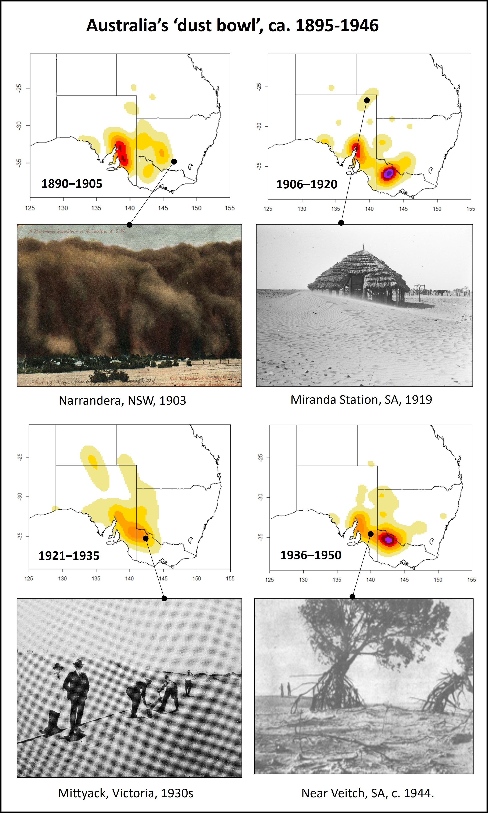
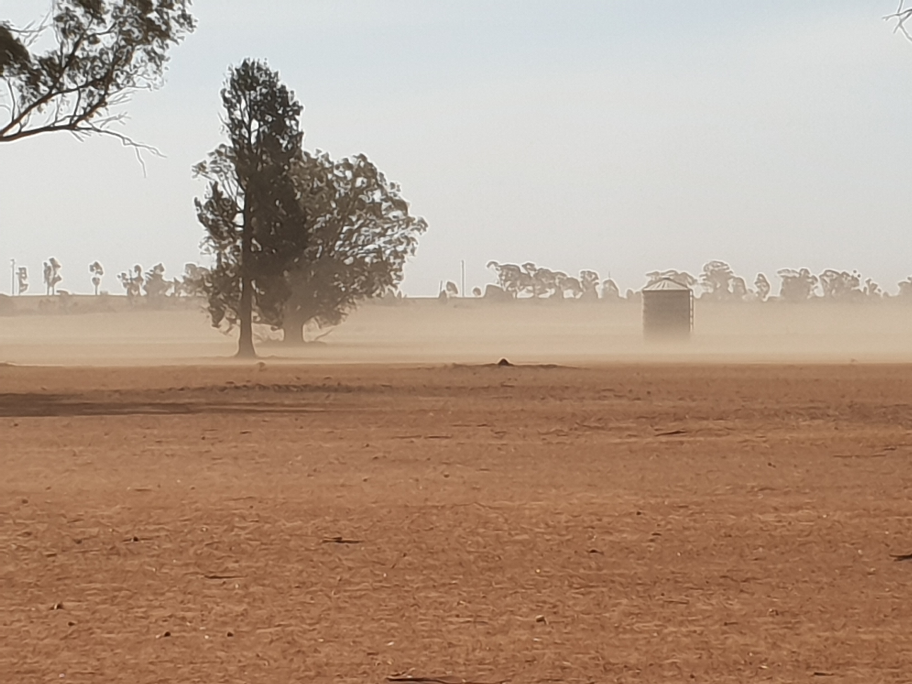
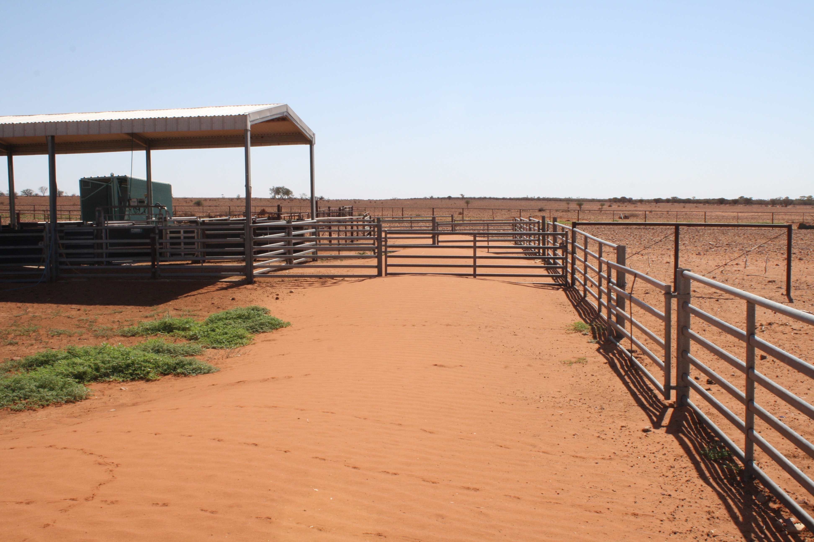

The Australian ‘dust bowl’
Rediscovering the 50-year long ‘dust bowl’ that engulfed southern Australia
One of the more interesting pieces of research that I did while writing my book “Drought Country” was to investigate the distribution and severity of wind erosion that occurred in southern, eastern and central Australia during the long ‘megadrought’ of ca. 1895-1946. This was a chronically dry period, roughly bounded by the Federation Drought (1895-1903) and the WWII Drought (1937-46), which featured incredible dust storms, soil loss, sand drift, and permanent or semi-permanent damage to rangeland and farming country.
While the impacts of these extreme events can still be seen in degraded mediterranean and semi-arid landscapes of South Australia, Victoria and New South Wales today, I have always found it fascinating that this era has been largely forgotten and has only recently entered academic discourse. Indeed, most people are unaware that, like the Great Plains of the United States, Australia experienced its own ‘dust bowl’ that was longer, covered a similar area, and featured many of the same drivers of environmental degradation.
We are not retrofitting modern concepts of the US Dust Bowl into Australia history, either. Many newspaper articles from that time described inland southern and eastern Australia as a ‘dust bowl’, and there was a very real concern that wind erosion and the relentless march of dunes of sand and soil would eventually engulf the wetter agricultural districts of eastern temperate NSW and Victoria. Stories from the entire ‘dust bowl’ era, which describe train tracks and roads being covered in drifting sand, trees having roots exposed and bark stripped off by wind scouring, and dust storms so thick that people needed lanterns in them middle of the day to move around, make interesting reading!
Mapping the ‘dust bowl’
Previous authors (e.g., Cattle SR (2016) Aeolian Research 21: 1-20 ; Bailey JS & Bailey JS (2016) Dust Bowl: Depression America to World War Two Australia, pp. 155-201) have discussed the Australian ‘dust bowl’, but here I was interested in mapping the distribution of the landscapes affected and then to link these to agriculture and other land management failures at the time. I did this by reading newspapers from the entire period of 1895-1946 and locating records of severe aeolian sand drift and soil movement. The results are shown in the following figure, which indicates that severe sand and soil erosion began during the severe rabbit plagues of the early 1890s just prior to the Federation Drought, with the worst-affected areas being in the sandy mallee country of south-eastern South Australia, although Victoria and the NSW Riverina were also affected.
Later, and particularly during the 1912-1915 WWI Drought, severe wind erosion and drift developed in the mallee region of northern Victoria, and then in central Australia during the 1920s-1930s. Severe ‘dust bowl’ conditions re-emerged in Victoria and eastern NSW during the WWII drought, before receding, first in SA and Victoria in 1946, and then further north and inland during the wetter years of the late 1940s. In total, perhaps 800,000 km2 of southern, central and south-easten Australia suffered major wind erosion, inclduing around 200,000 km2 of the southern mallee country.

Distribution and images of the Australian ‘dust bowl’
Causes and solutions
The Australian ‘dust bowl’ had multiple causes. Much of the mallee country of SA and Victoria is dominated by sandy soils, and large areas contain vegetated sand dunes that were last highly active during the most recent Pleistocene glacial period. The great rabbit plagues of the 1880s-1890s stripped vegetation from these areas, as did overstocking by sheep, but it was the clearing of mallee eucalypts, burning of regrowth, and then ploughing on sand dunes in cropping country that led to the first really large-scale aeolian (wind-driven) mobilisation of sand and soil, especially with the onset of the horrendous Federation Drought. Overstocking and the trampling of sandy country and clay-loam soils across the Riverina and Darling regions of NSW also caused wind erosion and tremendous dust storms which afflicted much of eastern Australia during dry or drought years.
The decline of the ‘dust bowl’ was a matter of land management reforms and a series of fortunate events. The most important factor, in my view, was the sustained increase in rainfall that began in SA and Victoria in 1946, and then across central Australia and western NSW and Queensland in 1947. Severe droughts became (for a while!) a thing of the past, and in many areas there was simply little or no lighter topsoil left to blow away even when drought did return. Vegetation began to recover on drought-affected country, and the spread of myxomatosis in the 1940s also drastically reduced rabbit numbers and hence excess grazing pressure. But we must also recognise that scientific and policy approaches to combat soil erosion gathered pace through the 1930s and 1940s, largely in response to the terrible degradation experienced through the ‘dust bowl’ period, and these began to truly transform the management of cropping and pastoral country across inland Australia in the 1950s and 1960s.
Eternal vigilance
During the 1950s-1990s, which was a period of generally higher rainfall, the ‘dust bowl’ and prolonged megadrought that had endured across southern Australia in the first half of the century seemed generally far away. However, the extreme dry conditions experienced during the 2001-2009 Millennium Drought ushered in the return of wind erosion and moblisation of soil and sand across much of the southern and eastern inland, albeit on a scale less severe than during the ‘dust bowl’. Nevertheless, the fact that major dust storms repeatedly swept across the east of the continent and even into major cities showed that without careful management of agricultural cropping and grazing systems, conditions like those experienced during the ‘dust bowl’ could indeed return.

